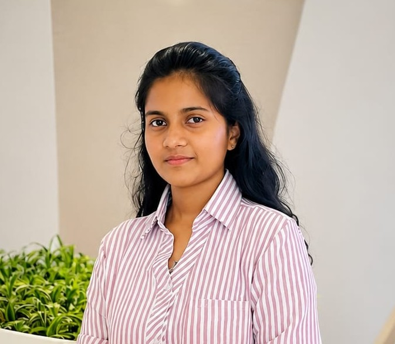

I am an enthusiastic Software Engineering undergraduate
pursuing a BSc (Honours) in Software Engineering, with a strong passion for building innovative, user-focused,
and scalable software solutions. I am interested in Software Engineering, Front-End Development, UI/UX Design,
and creating seamless digital experiences through clean and efficient code.
I have hands-on experience developing web and mobile applications using technologies
such as Java, JavaScript, TypeScript, React.js, Next.js, HTML, CSS, Tailwind CSS, Node.js, and databases
including MySQL. I enjoy transforming ideas into functional applications by combining technical skills with creativity
and problem-solving abilities.
Through academic projects and personal projects, I have worked on
areas such as e-commerce platforms, smart study applications, management systems,
and responsive user interfaces. These experiences have strengthened my knowledge of software development
practices, API integration, database design, version control using Git/GitHub, and modern development workflows.
I am continuously learning new technologies and improving my skills in software architecture,
cloud technologies, and quality-focused software development. I am open to internship opportunities
where I can contribute my skills, collaborate with experienced teams, and gain real-world industry experience.
